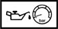

ENGINE OIL PRESS
- Path
- Technical Data > Manufacturing data > 05 DIAGNOSTICS > 0510 VARIOUS CONTROLS > ENGINE OIL PRESS
- Kind
- technical data / specifications
- Applies to
- all engines; all production periods
- Interactive page
- https://sloeber94.github.io/elrnDB-a147/en/#/3022965
Applies to: all engines; all production periods
Engine oil pressure at 4000 revs/min (bar) | Validity |  | ||
|---|---|---|---|---|
4.5 | 3.2 V6 | |||
Engine oil pressure at 4000 rpm/ (bar) | Validity | |||
3.5 ÷ 4.5 | 1.6 TS 2.0 TS | |||
Engine oil pressure when idling (bar) | Validity | |||
0.8 | 3.2 V6 | |||
Engine oil pressure when idling (bar) | Validity | |||
1.0 ÷ 1.5 | 1.6 TS 2.0 TS | |||